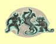
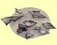
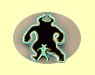
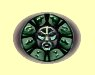
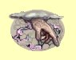
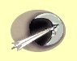
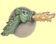
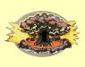
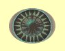

Èerná magie
Zmrtvýchvstání
Mana: 20, Cena: 1000
Zmrtvýchvstání ti umo¾ní vrátit k ¾ivotu vybranou pøí¹eru (ne v¹echny druhy). Pøí¹era za to v ¾ádném pøípadì neoplývá vdìèností ani mírumilovností, ale mù¾ete ji kdykoliv zase zabít.
| Normální | Potvora získá 10 bodù zdraví za bod dovednosti (a¾ do svého maxima) | |
| Expert | Potvora získá 20 bodù zdraví za bod dovenosti | |
| Mistr | Potvora získá 30 bodù zdraví za bod dovednosti |
Toxický mrak
Mana: 30, Cena: 1500
Jedovatý mrak zapáchajících plynù je vytvoøen pøed skupinou a pomalu odplouvá smìrem pryè. Mrak zpùsobí 25 bodù zranìní plus 1-10 bodù za ka¾dý bod dovednosti Èerné magie a trvá do té doby, ne¾ se ho nìkdo dotkne.
| Normální | Støední zotavení | |
| Expert | Rychlej¹í zotavení | |
| Mistr | Nejrychlej¹í zotavení |
Masové prokletí
Mana: 40, Cena: 2000
Zpùsobí prokletí potvor v dohledu.
|  | Normální | Trvání 2 minuty za bod dovednosti |
| Expert | Trvání 3 minuty za bod dovednosti | |
| Mistr | Trvání 4 minuty za bod dovednosti |
Støepina
Mana: 50, Cena: 2500
Vystøelí ostny z rozpáleného kovu, které zasáhnou kohokoliv, kdo se postaví do cesty. Ka¾dý kousek zpùsobí 6 bodù zranìní plus 1-6 za bod dovednosti v Èerné magii.
|  | Normální | Støední zotavení a 3 úlomky |
| Expert | Rychlej¹í zotavení a 5 úlomkù | |
| Mistr | Nejrychlej¹í zotavení a 7 úlomkù |
Poznámka: Zranìní kouzlem Støepina se poèítá jako fyzické zranìní, lze jím tedy zranit i postavy imunní na magii.
Smr¹»ovací paprsek
Mana: 60, Cena: 3000
Zasa¾ené monstrum, by» by to byla ta nejmocnìj¹í potvora svìta, se scvrkne na decentní velikost. Doba trvání je 5 minut za bod dovednosti Èerné magie. Zmen¹ená potvora zpùsobuje polovièní, tøetinový nebo ètvrtinový zásah ne¾ obvykle.
|  | Normální | Zmen¹í potvoru na polovinu |
| Expert | Zmen¹í potvoru na tøetinu | |
| Mistr | Zmen¹í potvoru na ètvrtinu |
Den ochrany
Mana: 70, Cena: 3500
Souèasnì se¹le na celou skupinu kouzla Odolnost proti Ohni, Chladu, Elektøinì, Jedu a Magii, plus Peøíèko a Èarodìjovo oko na úrovni dovednosti v Èerné magii.
|  | Normální | V¹echna kouzla na dvojnásobku dovednosti Èerné magie |
| Expert | V¹echna kouzla na trojnásobku dovednosti Èerné magie | |
| Mistr | V¹echna kouzla na ètyønásobku dovednosti Èerné magie |
Dotek smrti
Mana: 80, Cena: 4000
Pokusí se naráz usmrtit jednu obì» tím, ¾e jí vyrve du¹i z tìla. Dotek smrti má ¹anci na úspìch ve vý¹i 3% za ka¾dý bod dovednosti v Èerné magii, pro experty a mistry se ¹ance zvy¹uje na 4%, resp. 5%
|  | Normální | 3% ¹ance na úspìch za bod dovednosti Èerné magie |
| Expert | 4% ¹ance na úspìch za bod dovednosti Èerné magie | |
| Mistr | 5% ¹ance na úspìch za bod dovednosti Èerné magie |
Poznámka: Za nepøítele zabitého tímto kouzlem, nezíská dru¾ina ¾ádné zku¹enosti.
Mìsíèní paprsek
Mana: 90, Cena: 5000
Mocné kouzlo Temnoty, Mìsíèní paprsek zraní v¹echna monstra v dohledu a pøidá zdraví v¹em ve skupinì. Nezpùsobí velké ¹kody, ani moc nevyléèí, ale je to jediné kouzlo fungující venku schopné zranit v¹echny v dohledu. Mìsíèní paprsek funguje pouze venku a v noci. V¹echna monstra jsou zasa¾ena za 1-4 bodù zranìní za bod dovednosti Èerné magie a v¹em postavám se doplní 1-4 body zdraví za bod dovednosti.
|  | Normální | Pomalé zotavení |
| Expert | Rychlej¹í zotavení | |
| Mistr | Nejrychlej¹í zotavení |
Draèí dech
Mana: 100, Cena: 6000
Draèí dech umo¾ní kouzelníkovi vypustit oblak toxických plynù, který zasáhne jednu obì» a zraní v¹echny dal¹í v dosahu. Toto kouzlo je nejsilnìj¹í ze v¹ech a zpùsobuje 1-25 bodù zranìní za bod dovednosti v Èerné magii.
|  | Normální | Pomalé zotavení |
| Expert | Rychlej¹í zotavení | |
| Mistr | Nejrychlej¹í zotavení |
Armageddon
Mana: 150, Cena: 7000
Ideální na vyhlazování mìst. Toto kouzlo mù¾e být sesíláno adepty Èerné magie jen jednou dennì a pouze venku. Armageddon zpùsobuje 50 bodù zranìní plus 1 bod za ka¾dý bod dovednosti v Èerné magii v¹emu ¾ivému na mapì, vèetnì vlastních postav.
|  | Normální | Funguje jednou dennì |
| Expert | Funguje dvakrát dennì | |
| Mistr | Funguje tøikrát dennì |
Temné tajemství
Mana: 200, Cena: 10000
Kouzlo se pokusí seslat tajemnou temnou sílu na vybrané obìti, proto se jmenuje Temné tajemství. Cíl kouzla zasáhne nìjaké náhodné kouzlo, tak¾e se mù¾e stát, ¾e potvora vùèi nìmu bude imunní.
|  | Normální | Pomalé zotavení |
| Expert | Rychlej¹í zotavení | |
| Mistr | Nejrychlej¹í zotavení |